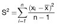
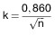
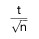
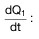
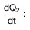
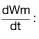
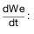
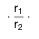
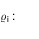

| 0 | Inhaltsübersicht |
| 1 | Vorschriften zur Erlangung der Betriebserlaubnis |
| 1.1 | Anwendungsbereich |
| 1.2 | Begriffsbestimmungen |
| 1.3 | Anforderungen |
| 1.4 | Antrag auf Erteilung der Betriebserlaubnis |
| 1.5 | Genehmigungsverfahren |
| 1.6 | Änderungen an genehmigten Fahrzeugtypen und des Wartungsplans |
| 1.7 | Prüfungen |
| 1.8 | Überprüfung der Einhaltung der Vorschriften in der Produktion und während der Fahrzeuglebensdauer |
| 1.9 | (weggefallen) |
| 1.10 | Genehmigungsbehörde |
| 1.11 | Mitteilung über die Prüfung |
| 1.12 | Anerkennung von Prüfungen in anderen Staaten |
| 2 | Kriterien für die Ausdehnung der Betriebserlaubnis, Beschreibung des Fahrzeugs, Hauptmerkmale des Motors, Wartungsplan |
| 2.1 | Kriterien für die Ausdehnung der Betriebserlaubnis |
| 2.2 | Beschreibung des Fahrzeugs, Hauptmerkmale des Motors, der emissionsmindernden und -relevanten Bauteile des Fahrzeugtyps, für den die Betriebserlaubnis beantragt wird |
| 2.3 | Wartungsplan für die emissionsmindernden und -relevanten Bauteile |
| 3 | Durchführung der Prüfungen der gas- und partikelförmigen luftverunreinigenden Emissionen |
| 3.1 | Einleitung |
| 3.2 | Übersicht über die Prüfungen |
| 3.2.1 | Vorbereitung |
| 3.2.2 | Prüfung der Abgasemissionen |
| 3.2.3 | Prüfung der Verdunstungsemissionen |
| 3.3 | Prüffahrzeug und Kraftstoff |
| 3.3.1 | Prüffahrzeug |
| 3.3.2 | Zusätzliche Vorrichtungen am Prüffahrzeug |
| 3.3.3 | Kraftstoff |
| 3.4 | Prüfeinrichtungen |
| 3.4.1 | Fahrleistungsprüfstand |
| 3.4.2 | Abgas- und Partikelentnahmeeinrichtung |
| 3.4.3 | Einrichtung zur Ermittlung der Verdunstungsemissionen |
| 3.4.4 | Analysegeräte |
| 3.4.5 | Volumenmessung |
| 3.4.6 | Gase |
| 3.4.7 | Zusätzliche Messgeräte |
| 3.4.8 | Abgasentnahmesystem |
| 3.5 | Vorbereitung der Prüfungen |
| 3.5.1 | Anpassung der äquivalenten Schwungmassen an die translatorisch bewegten Massen des Fahrzeugs |
| 3.5.2 | Einstellung der Bremse auf dem Prüfstand |
| 3.5.3 | Vorbereitung der Messeinrichtungen |
| 3.5.4 | Vorbereitung des Fahrzeugs |
| 3.6 | Emissionsprüfungen |
| 3.6.1 | Allgemeine Vorschriften |
| 3.6.2 | Fahrzeuge mit Fremdzündungsmotoren |
| 3.6.2.1 | Allgemeines zum Prüfablauf |
| 3.6.2.2 | Prüfung der Tankatmungsverluste |
| 3.6.2.3 | Prüfung der Abgasemissionen |
| 3.6.2.4 | Prüfung der Verdunstungsemissionen beim Heißabstellen |
| 3.6.3 | Fahrzeuge mit Selbstzündungsmotoren |
| 3.6.3.1 | Allgemeines zum Prüfablauf |
| 3.6.3.2 | Prüfung der Abgasemissionen |
| 3.6.4 | Prüfung gemäß § 47a |
| 3.7 | Gas-, Partikelentnahme, Analyse |
| 3.7.1 | Probenahme |
| 3.7.2 | Analyse |
| 3.7.3 | Bestimmung der Menge der emittierten luftverunreinigenden Gase und Partikel |
| 3.8 | Fahrkurven zur Bestimmung der durchschnittlichen Emissionsmengen |
| 3.8.1 | Allgemeines |
| 3.8.2 | Zulässige Abweichungen |
| 3.8.3 | Verwendung des Getriebes |
| 3.8.4 | Weitere Hinweise zum Durchfahren der Fahrkurven |
| 3.9 | Fahrleistungsprüfstand |
| 3.9.1 | Verfahren zur Kalibrierung des Fahrleistungsprüfstands |
| 3.9.1.1 | Allgemeines |
| 3.9.1.2 | Kalibrierung der Leistungsanzeige in Abhängigkeit von der aufgenommenen Leistung |
| 3.9.2 | Fahrwiderstand eines Fahrzeugs |
| 3.9.2.1 | Allgemeines |
| 3.9.2.2 | Beschreibung der Fahrbahn |
| 3.9.2.3 | Metereologische Bedingungen |
| 3.9.2.4 | Zustand und Vorbereitung des Prüffahrzeugs |
| 3.9.2.5 | Messverfahren für die Energieänderung beim Auslaufversuch |
| 3.9.2.6 | Messverfahren für das Drehmoment bei konstanter Geschwindigkeit |
| 3.9.3 | Überprüfung der Gesamtschwungmassen des Fahrleistungsprüfstands bei elektrischer Simulation |
| 3.9.3.1 | Allgemeines |
| 3.9.3.2 | Prinzip |
| 3.9.3.3 | Vorschriften |
| 3.9.3.4 | Kontrollverfahren |
| 3.9.3.5 | Technische Anmerkung |
| 3.10 | Beschreibung der Gas- und Partikelentnahmesysteme |
| 3.10.1 | Einleitung |
| 3.10.2 | Kriterien für das System mit variabler Verdünnung beim Messen gas- und partikelförmiger Luftverunreinigungen im Abgas |
| 3.10.3 | Beschreibung der Systeme |
| 3.10.4 | Ermittlung der Massenemissionen |
| 3.11 | Kalibrierverfahren für die Geräte |
| 3.11.1 | Erstellung der Kalibrierkurve des Analysators |
| 3.11.2 | Überprüfung der Wirksamkeit des NOx-Konverters |
| 3.11.3 | Kalibrierung des Entnahmesystems mit konstantem Volumen (CVS-System) |
| 3.11.4 | Überprüfung des Gesamtsystems |
| 3.12 | Kalibrierung der Messkammer und Berechnung der Verdunstungsemissionen |
| 3.12.1 | Kalibrierung der gasdichten Kammer zur Ermittlung der Verdunstungsemissionen |
| 3.12.2 | Berechnung der Verdunstungsemissionen |
| 3.13 | Berechnung der emittierten Mengen gas- und partikelförmiger Luftverunreinigungen |
| 3.13.1 | Allgemeines |
| 3.13.2 | Volumenbestimmungen |
| 3.13.3 | Berechnung der korrigierten Konzentration luftverunreinigender Gase im Auffangbeutel |
| 3.13.4 | Berechnung des Feuchtekorrekturfaktors für NO |
| 3.13.5 | Bestimmung der mittleren CH-Konzentration bei Selbstzündungsmotoren |
| 4 | Ermittlung des Verschlechterungsfaktors und des Verschlechterungswerts |
| 4.1 | Allgemeines |
| 4.2 | Durchführung der Dauerlaufprüfung |
| 4.3 | Berechnung |
| 4.4 | Schlussbericht |
| 5 | Prüfkraftstoffspezifikation |
| 5.1 | Technische Daten des Prüfkraftstoffes für die Prüfung der Fahrzeuge mit Fremdzündungsmotor |
| 5.2 | Technische Daten des Prüfkraftstoffs für die Prüfung der Fahrzeuge mit Selbstzündungsmotor |
| 5.3 | Prüfkraftstoff für die Prüfung von Flüssiggasfahrzeugen mit Fremdzündungsmotor |
| 6 | Formblatt: Mitteilung über die Betriebserlaubnis |
| Anhang I | Fahrzeugbeschreibung gemäß Anlage XXIII |
| Anhang II | Hauptmerkmale des Motors und Angaben über die Durchführung der Prüfungen gemäß Anlage XXIII |
| Abgasreinigungssystem | Verschlechterungs- | |||||
|---|---|---|---|---|---|---|
| faktor | wert | |||||
| CH | CO | NOx | Partikel | Verdunstungsemission | ||
| 1. | Fremdzündungsmotor mit Oxidationskatalysator | 1,3 | 1,2 | 1,0 | – | 0,0 |
| 2. | Fremdzündungsmotor ohne Katalysator | 1,3 | 1,2 | 1,0 | – | 0,0 |
| 3. | Fremdzündungsmotor mit Dreiwegekatalysator | 1,3 | 1,2 | 1,1 | – | 0,0 |
| 4. | Dieselmotoren | 1,0 | 1,1 | 1,0 | 1,2 | – |
| a) | ≥ 20 000 | – 1 Promille der Produktion |
| b) | ≥ 2 000 < 20 000 | – fünf Fahrzeuge pro Quartal |
| c) | < 2 000 | – vier Fahrzeuge pro Jahr. |
| x + k · S ≤ L | |||||||
| x : | jeweiliges arithmetisches Mittel der Emissionen gas- und partikelförmiger Luftverunreinigungen | ||||||
| L : | zulässiger Grenzwert unter Berücksichtigung der jeweiligen Verschlechterungsfaktoren und -werte | ||||||
| S : | Standardabweichung  | ||||||
| n : | Zahl der Prüfungen | ||||||
| k : | statistischer Faktor, der von n abhängt und in der folgenden Tabelle angegeben ist | ||||||
| xi : | Messwert der Emissionen gasförmiger Luftverunreinigungen | ||||||
| n | 2 | 3 | 4 | 5 | 6 | 7 | |
| k | 0,973 | 0,613 | 0,489 | 0,421 | 0,376 | 0,342 | |
| n | 8 | 9 | 10 | 11 | 12 | 13 | |
| k | 0,317 | 0,296 | 0,279 | 0,265 | 0,253 | 0,242 | |
| n | 14 | 15 | 16 | 17 | 18 | 19 | |
| k | 0,233 | 0,224 | 0,216 | 0,210 | 0,203 | 0,198 | |
| wenn n ≥ 20, |  | ||||||
| Bezugsmasse des Fahrzeugs Pr (kg) | Äquivalente Schwungmasse I (kg) |
|---|---|
| 480 < Pr ≦ 480 | 450 |
| 480 < Pr ≦ 540 | 510 |
| 540 < Pr ≦ 600 | 570 |
| 600 < Pr ≦ 650 | 625 |
| 650 < Pr ≦ 700 | 680 |
| 700 < Pr ≦ 780 | 740 |
| 780 < Pr ≦ 820 | 800 |
| 820 < Pr ≦ 880 | 850 |
| 880 < Pr ≦ 940 | 910 |
| 940 < Pr ≦ 990 | 960 |
| 990 < Pr ≦ 1 050 | 1 020 |
| 1 050 < Pr ≦ 1 110 | 1 080 |
| 1 110 < Pr ≦ 1 160 | 1 130 |
| 1 160 < Pr ≦ 1 220 | 1 190 |
| 1 220 < Pr ≦ 1 280 | 1 250 |
| 1 280 < Pr ≦ 1 330 | 1 300 |
| 1 330 < Pr ≦ 1 390 | 1 360 |
| 1 390 < Pr ≦ 1 450 | 1 420 |
| 1 450 < Pr ≦ 1 500 | 1 470 |
| 1 500 < Pr ≦ 1 560 | 1 530 |
| 1 560 < Pr ≦ 1 620 | 1 590 |
| 1 620 < Pr ≦ 1 670 | 1 640 |
| 1 670 < Pr ≦ 1 730 | 1 700 |
| 1 730 < Pr ≦ 1 790 | 1 760 |
| 1 790 < Pr ≦ 1 870 | 1 810 |
| 1 870 < Pr ≦ 1 980 | 1 930 |
| 1 980 < Pr ≦ 2 100 | 2 040 |
| 2 100 < Pr ≦ 2 210 | 2 150 |
| 2 210 < Pr ≦ 2 320 | 2 270 |
| 2 320 < Pr ≦ 2 440 | 2 380 |
| 2 440 < Pr ≦ 2 610 | 2 490 |
| 2 610 < Pr ≦ 2 830 | 2 720 |
| 2 830 < Pr ≦ 2 830 | 2 940 |
| t | v | t | v | t | v | t | v | t | v | t | v | t | v |
|---|---|---|---|---|---|---|---|---|---|---|---|---|---|
| 0 | 0,0 | 20 | 0,0 | 40 | 24,0 | 60 | 38,9 | 80 | 41,4 | 100 | 48,8 | 120 | 24,8 |
| 1 | 0,0 | 21 | 4,8 | 41 | 24,5 | 61 | 39,6 | 81 | 42,0 | 101 | 49,4 | 121 | 19,5 |
| 2 | 0,0 | 22 | 9,5 | 42 | 24,9 | 62 | 40,1 | 82 | 43,0 | 102 | 49,7 | 122 | 14,2 |
| 3 | 0,0 | 23 | 13,8 | 43 | 25,7 | 63 | 40,2 | 83 | 44,3 | 103 | 49,9 | 123 | 8,9 |
| 4 | 0,0 | 24 | 18,5 | 44 | 27,5 | 64 | 39,6 | 84 | 46,0 | 104 | 49,7 | 124 | 3,5 |
| 5 | 0,0 | 25 | 23,0 | 45 | 30,7 | 65 | 39,4 | 85 | 47,2 | 105 | 46,9 | 125 | 0,0 |
| 6 | 0,0 | 26 | 27,2 | 46 | 34,0 | 66 | 39,8 | 86 | 48,0 | 106 | 48,0 | 126 | 0,0 |
| 7 | 0,0 | 27 | 27,8 | 47 | 36,5 | 67 | 39,9 | 87 | 48,4 | 107 | 48,1 | 127 | 0,0 |
| 8 | 0,0 | 28 | 29,1 | 48 | 36,9 | 68 | 39,8 | 88 | 48,9 | 108 | 48,6 | 128 | 0,0 |
| 9 | 0,0 | 29 | 33,3 | 49 | 36,5 | 69 | 39,6 | 89 | 49,4 | 109 | 49,4 | 129 | 0,0 |
| 10 | 0,0 | 30 | 34,9 | 50 | 36,4 | 70 | 39,6 | 90 | 49,4 | 110 | 50,2 | 130 | 0,0 |
| 11 | 0,0 | 31 | 36,0 | 51 | 34,3 | 71 | 40,4 | 91 | 49,1 | 111 | 51,2 | 131 | 0,0 |
| 12 | 0,0 | 32 | 36,2 | 52 | 30,6 | 72 | 41,2 | 92 | 48,9 | 112 | 51,8 | 132 | 0,0 |
| 13 | 0,0 | 33 | 35,6 | 53 | 27,5 | 73 | 41,4 | 93 | 48,8 | 113 | 52,1 | 133 | 0,0 |
| 14 | 0,0 | 34 | 34,6 | 54 | 25,4 | 74 | 40,9 | 94 | 48,9 | 114 | 51,8 | 134 | 0,0 |
| 15 | 0,0 | 35 | 33,6 | 55 | 25,4 | 75 | 40,1 | 95 | 49,6 | 115 | 51,0 | 135 | 0,0 |
| 16 | 0,0 | 36 | 32,8 | 56 | 28,5 | 76 | 40,2 | 96 | 48,9 | 116 | 46,0 | 136 | 0,0 |
| 17 | 0,0 | 37 | 31,9 | 57 | 31,9 | 77 | 40,9 | 97 | 48,1 | 117 | 40,7 | 137 | 0,0 |
| 18 | 0,0 | 38 | 27,4 | 58 | 34,8 | 78 | 41,8 | 98 | 47,5 | 118 | 35,4 | 138 | 0,0 |
| 19 | 0,0 | 39 | 24,0 | 59 | 37,3 | 79 | 41,8 | 99 | 48,0 | 119 | 30,1 | 139 | 0,0 |
| t | v | t | v | t | v | t | v | t | v | t | v | t | v |
| 140 | 0,0 | 160 | 0,0 | 180 | 41,5 | 200 | 67,8 | 220 | 80,5 | 240 | 91,2 | 260 | 87,1 |
| 141 | 0,0 | 161 | 0,0 | 181 | 43,8 | 201 | 70,0 | 221 | 81,4 | 241 | 91,2 | 261 | 86,6 |
| 142 | 0,0 | 162 | 0,0 | 182 | 42,6 | 202 | 72,6 | 222 | 82,1 | 242 | 90,9 | 262 | 85,9 |
| 143 | 0,0 | 163 | 0,0 | 183 | 38,6 | 203 | 74,0 | 223 | 82,9 | 243 | 90,9 | 263 | 85,3 |
| 144 | 0,0 | 164 | 5,3 | 184 | 36,5 | 204 | 75,3 | 224 | 84,0 | 244 | 90,9 | 264 | 84,7 |
| 145 | 0,0 | 165 | 10,6 | 185 | 31,2 | 205 | 76,4 | 225 | 85,6 | 245 | 90,9 | 265 | 83,8 |
| 146 | 0,0 | 166 | 15,9 | 186 | 28,5 | 206 | 76,4 | 226 | 87,1 | 246 | 90,9 | 266 | 84,3 |
| 147 | 0,0 | 167 | 21,2 | 187 | 27,7 | 207 | 76,1 | 227 | 87,9 | 247 | 90,9 | 267 | 83,7 |
| 148 | 0,0 | 168 | 26,6 | 188 | 29,1 | 208 | 76,0 | 228 | 88,4 | 248 | 90,6 | 268 | 83,5 |
| 149 | 0,0 | 169 | 31,9 | 189 | 29,9 | 209 | 75,6 | 229 | 88,5 | 249 | 90,3 | 269 | 83,2 |
| 150 | 0,0 | 170 | 35,7 | 190 | 32,2 | 210 | 75,6 | 230 | 88,4 | 250 | 89,8 | 270 | 82,9 |
| 151 | 0,0 | 171 | 39,1 | 191 | 35,7 | 211 | 75,6 | 231 | 87,9 | 251 | 88,7 | 271 | 83,0 |
| 152 | 0,0 | 172 | 41,5 | 192 | 39,4 | 212 | 75,6 | 232 | 87,9 | 252 | 87,9 | 272 | 83,4 |
| 153 | 0,0 | 173 | 42,5 | 193 | 43,9 | 213 | 75,6 | 233 | 88,2 | 253 | 87,2 | 273 | 83,8 |
| 154 | 0,0 | 174 | 41,4 | 194 | 49,1 | 214 | 76,0 | 234 | 88,7 | 254 | 86,9 | 274 | 84,5 |
| 155 | 0,0 | 175 | 40,4 | 195 | 53,9 | 215 | 76,3 | 235 | 89,3 | 255 | 86,4 | 275 | 85,3 |
| 156 | 0,0 | 176 | 39,8 | 196 | 58,3 | 216 | 77,1 | 236 | 89,6 | 256 | 86,3 | 276 | 86,1 |
| 157 | 0,0 | 177 | 40,2 | 197 | 60,0 | 217 | 78,1 | 237 | 90,3 | 257 | 86,7 | 277 | 86,9 |
| 158 | 0,0 | 178 | 40,6 | 198 | 63,2 | 218 | 79,0 | 238 | 90,6 | 258 | 86,9 | 278 | 88,4 |
| 159 | 0,0 | 179 | 40,9 | 199 | 65,2 | 219 | 79,7 | 239 | 91,1 | 259 | 87,1 | 279 | 89,2 |
| t | v | t | v | t | v | t | v | t | v | t | v | t | v |
| 280 | 89,5 | 300 | 79,0 | 320 | 44,3 | 340 | 0,0 | 360 | 49,6 | 380 | 58,7 | 400 | 0,0 |
| 281 | 90,1 | 301 | 78,2 | 321 | 39,9 | 341 | 0,0 | 361 | 50,9 | 381 | 58,6 | 401 | 0,0 |
| 282 | 90,1 | 302 | 77,4 | 322 | 34,6 | 342 | 0,0 | 362 | 51,7 | 382 | 57,9 | 402 | 0,0 |
| 283 | 89,8 | 303 | 76,0 | 323 | 32,3 | 343 | 0,0 | 363 | 52,3 | 383 | 56,5 | 403 | 4,2 |
| 284 | 88,8 | 304 | 74,2 | 324 | 30,7 | 344 | 0,0 | 364 | 54,1 | 384 | 54,9 | 404 | 9,5 |
| 285 | 87,7 | 305 | 72,4 | 325 | 29,8 | 345 | 0,0 | 365 | 55,5 | 385 | 53,9 | 405 | 14,5 |
| 286 | 86,3 | 306 | 70,5 | 326 | 27,4 | 346 | 0,0 | 366 | 55,7 | 386 | 50,5 | 406 | 20,1 |
| 287 | 84,5 | 307 | 68,6 | 327 | 24,9 | 347 | 1,6 | 367 | 56,2 | 387 | 46,7 | 407 | 25,4 |
| 288 | 82,9 | 308 | 66,8 | 328 | 20,1 | 348 | 6,9 | 368 | 56,0 | 388 | 41,4 | 408 | 30,7 |
| 289 | 82,9 | 309 | 64,9 | 329 | 17,4 | 349 | 12,2 | 369 | 55,5 | 389 | 37,0 | 409 | 36,0 |
| 290 | 82,9 | 310 | 62,0 | 330 | 12,9 | 350 | 17,5 | 370 | 55,8 | 390 | 32,7 | 410 | 40,2 |
| 291 | 82,2 | 311 | 59,5 | 331 | 7,6 | 351 | 22,9 | 371 | 57,1 | 391 | 28,2 | 411 | 41,2 |
| 292 | 80,6 | 312 | 56,6 | 332 | 2,3 | 352 | 27,8 | 372 | 57,9 | 392 | 23,3 | 412 | 44,3 |
| 293 | 80,5 | 313 | 54,4 | 333 | 0,0 | 353 | 32,2 | 373 | 57,9 | 393 | 19,3 | 413 | 46,7 |
| 294 | 80,6 | 314 | 52,3 | 334 | 0,0 | 354 | 36,2 | 374 | 57,9 | 394 | 14,0 | 414 | 48,3 |
| 295 | 80,5 | 315 | 50,7 | 335 | 0,0 | 355 | 38,1 | 375 | 57,9 | 395 | 8,7 | 415 | 48,4 |
| 296 | 79,8 | 316 | 49,2 | 336 | 0,0 | 356 | 40,6 | 376 | 57,9 | 396 | 3,4 | 416 | 48,3 |
| 297 | 79,7 | 317 | 49,1 | 337 | 0,0 | 357 | 42,8 | 377 | 57,9 | 397 | 0,0 | 417 | 47,8 |
| 298 | 79,7 | 318 | 48,3 | 338 | 0,0 | 358 | 45,2 | 378 | 58,1 | 398 | 0,0 | 418 | 47,2 |
| 299 | 79,7 | 319 | 46,7 | 339 | 0,0 | 359 | 48,3 | 379 | 58,6 | 399 | 0,0 | 419 | 46,3 |
| t | v | t | v | t | v | t | v | t | v | t | v | t | v |
| 420 | 45,1 | 440 | 0,0 | 460 | 54,1 | 480 | 56,6 | 500 | 21,2 | 520 | 25,7 | 540 | 40,6 |
| 421 | 40,2 | 441 | 0,0 | 461 | 56,0 | 481 | 56,3 | 501 | 16,6 | 521 | 28,5 | 541 | 40,2 |
| 422 | 34,9 | 442 | 0,0 | 462 | 56,5 | 482 | 56,5 | 502 | 11,6 | 522 | 30,6 | 542 | 40,2 |
| 423 | 29,6 | 443 | 0,0 | 463 | 57,3 | 483 | 56,6 | 503 | 6,4 | 523 | 32,3 | 543 | 40,2 |
| 424 | 24,3 | 444 | 0,0 | 464 | 58,1 | 484 | 57,1 | 504 | 1,6 | 524 | 33,8 | 544 | 39,3 |
| 425 | 19,0 | 445 | 0,0 | 465 | 57,9 | 485 | 56,6 | 505 | 0,0 | 525 | 35,4 | 545 | 37,2 |
| 426 | 13,7 | 446 | 0,0 | 466 | 58,1 | 486 | 56,3 | 506 | 0,0 | 526 | 37,0 | 546 | 31,9 |
| 427 | 8,4 | 447 | 0,0 | 467 | 58,3 | 487 | 56,3 | 507 | 0,0 | 527 | 38,3 | 547 | 26,6 |
| 428 | 3,1 | 448 | 5,3 | 468 | 57,9 | 488 | 56,3 | 508 | 0,0 | 528 | 39,4 | 548 | 21,2 |
| 429 | 0,0 | 449 | 10,6 | 469 | 57,5 | 489 | 56,0 | 509 | 0,0 | 529 | 40,1 | 549 | 15,9 |
| 430 | 0,0 | 450 | 15,9 | 470 | 57,9 | 490 | 55,7 | 510 | 0,0 | 530 | 40,2 | 550 | 10,6 |
| 431 | 0,0 | 451 | 21,2 | 471 | 57,9 | 491 | 55,8 | 511 | 1,9 | 531 | 40,2 | 551 | 5,3 |
| 432 | 0,0 | 452 | 26,6 | 472 | 57,3 | 492 | 53,9 | 512 | 5,6 | 532 | 40,2 | 552 | 0,0 |
| 433 | 0,0 | 453 | 31,0 | 473 | 57,1 | 493 | 51,5 | 513 | 8,9 | 533 | 40,2 | 553 | 0,0 |
| 434 | 0,0 | 454 | 37,2 | 474 | 57,0 | 494 | 48,4 | 514 | 10,5 | 534 | 40,2 | 554 | 0,0 |
| 435 | 0,0 | 455 | 42,5 | 475 | 56,6 | 495 | 45,1 | 515 | 13,7 | 535 | 40,2 | 555 | 0,0 |
| 436 | 0,0 | 456 | 44,7 | 476 | 56,6 | 496 | 41,0 | 516 | 15,4 | 536 | 41,2 | 556 | 0,0 |
| 437 | 0,0 | 457 | 46,8 | 477 | 56,6 | 497 | 36,2 | 517 | 16,9 | 537 | 41,5 | 557 | 0,0 |
| 438 | 0,0 | 458 | 50,7 | 478 | 56,6 | 498 | 31,9 | 518 | 19,2 | 538 | 41,8 | 558 | 0,0 |
| 439 | 0,0 | 459 | 53,1 | 479 | 56,6 | 499 | 26,6 | 519 | 22,5 | 539 | 41,2 | 559 | 0,0 |
| t | v | t | v | t | v | t | v | t | v | t | v | t | v |
| 560 | 0,0 | 580 | 28,5 | 600 | 34,8 | 620 | 0,0 | 640 | 0,0 | 660 | 41,2 | 680 | 0,0 |
| 561 | 0,0 | 581 | 28,2 | 601 | 35,4 | 621 | 0,0 | 641 | 0,0 | 661 | 41,8 | 681 | 0,0 |
| 562 | 0,0 | 582 | 27,4 | 602 | 36,0 | 622 | 0,0 | 642 | 0,0 | 662 | 43,9 | 682 | 0,0 |
| 563 | 0,0 | 583 | 27,2 | 603 | 36,2 | 623 | 0,0 | 643 | 0,0 | 663 | 43,1 | 683 | 0,0 |
| 564 | 0,0 | 584 | 26,7 | 604 | 36,2 | 624 | 0,0 | 644 | 0,0 | 664 | 42,3 | 684 | 0,0 |
| 565 | 0,0 | 585 | 27,4 | 605 | 36,2 | 625 | 0,0 | 645 | 0,0 | 665 | 42,5 | 685 | 0,0 |
| 566 | 0,0 | 586 | 27,5 | 606 | 36,5 | 626 | 0,0 | 646 | 3,2 | 666 | 42,6 | 686 | 0,0 |
| 567 | 0,0 | 587 | 27,4 | 607 | 38,1 | 627 | 0,0 | 647 | 7,2 | 667 | 42,6 | 687 | 0,0 |
| 568 | 0,0 | 588 | 26,7 | 608 | 40,4 | 628 | 0,0 | 648 | 12,6 | 668 | 41,8 | 688 | 0,0 |
| 569 | 5,3 | 589 | 26,6 | 609 | 41,8 | 629 | 0,0 | 649 | 16,4 | 669 | 41,0 | 689 | 0,0 |
| 570 | 10,6 | 590 | 26,6 | 610 | 42,6 | 630 | 0,0 | 650 | 20,1 | 670 | 38,0 | 690 | 0,0 |
| 571 | 15,9 | 591 | 26,7 | 611 | 43,5 | 631 | 0,0 | 651 | 22,5 | 671 | 34,4 | 691 | 0,0 |
| 572 | 20,9 | 592 | 27,4 | 612 | 42,0 | 632 | 0,0 | 652 | 24,6 | 672 | 29,8 | 692 | 0,0 |
| 573 | 23,5 | 593 | 28,3 | 613 | 36,7 | 633 | 0,0 | 653 | 28,2 | 673 | 26,4 | 693 | 0,0 |
| 574 | 25,7 | 594 | 29,8 | 614 | 31,4 | 634 | 0,0 | 654 | 31,5 | 674 | 23,3 | 694 | 2,3 |
| 575 | 27,4 | 595 | 30,9 | 615 | 26,1 | 635 | 0,0 | 655 | 33,8 | 675 | 18,7 | 695 | 5,3 |
| 576 | 27,4 | 596 | 32,5 | 616 | 20,8 | 636 | 0,0 | 656 | 35,7 | 676 | 14,0 | 696 | 7,1 |
| 577 | 21,4 | 597 | 33,8 | 617 | 15,4 | 637 | 0,0 | 657 | 37,5 | 677 | 9,3 | 697 | 10,5 |
| 578 | 28,2 | 598 | 34,0 | 618 | 10,1 | 638 | 0,0 | 658 | 39,4 | 678 | 5,6 | 698 | 14,8 |
| 579 | 28,5 | 599 | 34,1 | 619 | 4,8 | 639 | 0,0 | 659 | 40,7 | 679 | 3,2 | 699 | 18,2 |
| t | v | t | v | t | v | t | v | t | v | t | v | t | v |
| 700 | 21,7 | 720 | 24,1 | 740 | 41,0 | 760 | 15,1 | 780 | 44,3 | 800 | 45,1 | 820 | 50,9 |
| 701 | 23,5 | 721 | 19,3 | 741 | 42,6 | 761 | 10,0 | 781 | 45,1 | 801 | 45,9 | 821 | 50,7 |
| 702 | 26,4 | 722 | 14,5 | 742 | 43,6 | 762 | 4,8 | 782 | 45,5 | 802 | 48,3 | 822 | 49,2 |
| 703 | 26,9 | 723 | 10,0 | 743 | 44,4 | 763 | 2,4 | 783 | 46,5 | 803 | 49,9 | 823 | 48,3 |
| 704 | 26,6 | 724 | 7,2 | 744 | 44,9 | 764 | 2,4 | 784 | 46,5 | 804 | 51,5 | 824 | 48,1 |
| 705 | 26,6 | 725 | 4,8 | 745 | 45,5 | 765 | 0,8 | 785 | 46,5 | 805 | 53,1 | 825 | 48,1 |
| 706 | 29,3 | 726 | 3,4 | 746 | 46,0 | 766 | 0,0 | 786 | 46,3 | 806 | 53,1 | 826 | 48,1 |
| 707 | 30,9 | 727 | 0,8 | 747 | 46,0 | 767 | 4,8 | 787 | 45,9 | 807 | 54,1 | 827 | 48,1 |
| 708 | 32,3 | 728 | 0,8 | 748 | 45,5 | 768 | 10,1 | 788 | 45,5 | 808 | 54,7 | 828 | 47,6 |
| 709 | 34,6 | 729 | 5,1 | 749 | 45,4 | 769 | 15,4 | 789 | 45,5 | 809 | 55,2 | 829 | 47,5 |
| 710 | 36,2 | 730 | 10,5 | 750 | 45,1 | 770 | 20,8 | 790 | 45,5 | 810 | 55,0 | 830 | 47,5 |
| 711 | 36,2 | 731 | 15,4 | 751 | 44,3 | 771 | 25,4 | 791 | 45,4 | 811 | 54,7 | 831 | 47,2 |
| 712 | 35,6 | 732 | 20,1 | 752 | 43,1 | 772 | 28,2 | 792 | 44,4 | 812 | 54,7 | 832 | 46,5 |
| 713 | 36,5 | 733 | 22,5 | 753 | 41,0 | 773 | 29,6 | 793 | 44,3 | 813 | 54,6 | 833 | 45,4 |
| 714 | 37,5 | 734 | 25,7 | 754 | 37,8 | 774 | 31,4 | 794 | 44,3 | 814 | 54,1 | 834 | 44,6 |
| 715 | 37,8 | 735 | 29,0 | 755 | 34,6 | 775 | 33,3 | 795 | 44,3 | 815 | 53,3 | 835 | 43,5 |
| 716 | 36,2 | 736 | 31,5 | 756 | 30,6 | 776 | 35,4 | 796 | 44,3 | 816 | 53,1 | 836 | 41,0 |
| 717 | 34,8 | 737 | 34,6 | 757 | 26,6 | 777 | 37,3 | 797 | 44,3 | 817 | 52,3 | 837 | 38,1 |
| 718 | 33,0 | 738 | 37,2 | 758 | 24,0 | 778 | 40,2 | 798 | 44,3 | 818 | 51,5 | 838 | 35,4 |
| 719 | 29,0 | 739 | 39,4 | 759 | 20,1 | 779 | 42,6 | 799 | 44,4 | 819 | 51,3 | 839 | 33,0 |
| t | v | t | v | t | v | t | v | t | v | t | v | t | v |
| 840 | 30,9 | 860 | 46,7 | 880 | 46,8 | 900 | 43,3 | 920 | 36,4 | 940 | 40,2 | 960 | 3,2 |
| 841 | 30,9 | 861 | 46,8 | 881 | 46,7 | 901 | 42,8 | 921 | 37,7 | 941 | 39,6 | 961 | 8,5 |
| 842 | 32,3 | 862 | 46,7 | 882 | 46,5 | 902 | 42,6 | 922 | 38,6 | 942 | 39,6 | 962 | 13,8 |
| 843 | 33,6 | 863 | 45,2 | 883 | 45,9 | 903 | 42,6 | 923 | 38,9 | 943 | 38,8 | 963 | 19,2 |
| 844 | 34,4 | 864 | 44,3 | 884 | 45,2 | 904 | 42,6 | 924 | 39,3 | 944 | 39,4 | 964 | 24,5 |
| 845 | 35,4 | 865 | 43,5 | 885 | 45,1 | 905 | 42,3 | 925 | 40,1 | 945 | 40,4 | 965 | 28,2 |
| 846 | 36,4 | 866 | 41,5 | 886 | 45,1 | 906 | 42,2 | 926 | 40,4 | 946 | 41,2 | 966 | 29,9 |
| 847 | 37,3 | 867 | 40,2 | 887 | 44,4 | 907 | 42,2 | 927 | 40,6 | 947 | 40,4 | 967 | 32,2 |
| 848 | 38,6 | 868 | 39,4 | 888 | 43,8 | 908 | 41,7 | 928 | 40,7 | 948 | 38,6 | 968 | 34,0 |
| 849 | 40,2 | 869 | 39,9 | 889 | 42,8 | 909 | 41,2 | 929 | 41,0 | 949 | 35,4 | 969 | 35,4 |
| 850 | 41,8 | 870 | 40,4 | 890 | 43,5 | 910 | 41,2 | 930 | 40,6 | 950 | 32,3 | 970 | 37,0 |
| 851 | 42,8 | 871 | 41,0 | 891 | 44,3 | 911 | 41,7 | 931 | 40,2 | 951 | 27,2 | 971 | 39,4 |
| 852 | 42,8 | 872 | 41,4 | 892 | 44,7 | 912 | 41,5 | 932 | 40,3 | 952 | 21,9 | 972 | 42,3 |
| 853 | 43,1 | 873 | 42,2 | 893 | 45,1 | 913 | 41,0 | 933 | 40,2 | 953 | 16,6 | 973 | 44,3 |
| 854 | 43,5 | 874 | 43,3 | 894 | 44,7 | 914 | 39,6 | 934 | 39,8 | 954 | 11,3 | 974 | 45,2 |
| 855 | 43,8 | 875 | 44,3 | 895 | 45,1 | 915 | 37,8 | 935 | 39,4 | 955 | 6,0 | 975 | 45,7 |
| 856 | 44,7 | 876 | 44,7 | 896 | 45,1 | 916 | 35,7 | 936 | 39,1 | 956 | 0,6 | 976 | 45,9 |
| 857 | 45,2 | 877 | 45,7 | 897 | 45,1 | 917 | 34,8 | 937 | 39,1 | 957 | 0,0 | 977 | 45,9 |
| 858 | 46,3 | 878 | 46,7 | 898 | 44,6 | 918 | 34,8 | 938 | 39,4 | 958 | 0,0 | 978 | 45,9 |
| 859 | 46,5 | 879 | 47,0 | 899 | 44,1 | 919 | 34,9 | 939 | 40,2 | 959 | 0,0 | 979 | 44,6 |
| t | v | t | v | t | v | t | v | t | v | t | v | t | v |
| 980 | 44,3 | 1000 | 37,8 | 1020 | 12,2 | 1040 | 0,0 | 1060 | 32,2 | 1080 | 29,0 | 1100 | 0,0 |
| 981 | 43,8 | 1001 | 38,6 | 1021 | 6,9 | 1041 | 0,0 | 1061 | 35,1 | 1081 | 24,1 | 1101 | 0,2 |
| 982 | 43,1 | 1002 | 39,6 | 1022 | 1,6 | 1042 | 0,0 | 1062 | 37,0 | 1082 | 19,8 | 1102 | 1,0 |
| 983 | 42,6 | 1003 | 39,9 | 1023 | 0,0 | 1043 | 0,0 | 1063 | 38,6 | 1083 | 17,9 | 1103 | 2,6 |
| 984 | 41,8 | 1004 | 40,4 | 1024 | 0,0 | 1044 | 0,0 | 1064 | 39,9 | 1084 | 17,1 | 1104 | 5,8 |
| 985 | 41,4 | 1005 | 41,0 | 1025 | 0,0 | 1045 | 0,0 | 1065 | 41,2 | 1085 | 16,1 | 1105 | 11,1 |
| 986 | 40,6 | 1006 | 41,2 | 1026 | 0,0 | 1046 | 0,0 | 1066 | 42,6 | 1086 | 15,3 | 1106 | 16,1 |
| 987 | 38,6 | 1007 | 41,0 | 1027 | 0,0 | 1047 | 0,0 | 1067 | 43,1 | 1087 | 14,6 | 1107 | 20,6 |
| 988 | 35,4 | 1008 | 40,2 | 1028 | 0,0 | 1048 | 0,0 | 1068 | 44,1 | 1088 | 14,0 | 1108 | 22,5 |
| 989 | 34,6 | 1009 | 38,8 | 1029 | 0,0 | 1049 | 0,0 | 1069 | 44,9 | 1089 | 13,8 | 1109 | 23,3 |
| 990 | 34,6 | 1010 | 38,1 | 1030 | 0,0 | 1050 | 0,0 | 1070 | 45,5 | 1090 | 14,2 | 1110 | 25,7 |
| 991 | 35,1 | 1011 | 37,3 | 1031 | 0,0 | 1051 | 0,0 | 1071 | 45,1 | 1091 | 14,5 | 1111 | 29,1 |
| 992 | 36,2 | 1012 | 36,9 | 1032 | 0,0 | 1052 | 0,0 | 1072 | 44,3 | 1092 | 14,0 | 1112 | 32,2 |
| 993 | 37,0 | 1013 | 36,2 | 1033 | 0,0 | 1053 | 1,9 | 1073 | 43,5 | 1093 | 13,8 | 1113 | 33,6 |
| 994 | 36,7 | 1014 | 35,4 | 1034 | 0,0 | 1054 | 6,4 | 1074 | 43,5 | 1094 | 12,9 | 1114 | 34,1 |
| 995 | 36,7 | 1015 | 34,8 | 1035 | 0,0 | 1055 | 11,7 | 1075 | 42,3 | 1095 | 11,3 | 1115 | 34,3 |
| 996 | 37,0 | 1016 | 33,0 | 1036 | 0,0 | 1056 | 17,1 | 1076 | 39,4 | 1096 | 8,0 | 1116 | 34,4 |
| 997 | 36,5 | 1017 | 28,2 | 1037 | 0,0 | 1057 | 22,4 | 1077 | 36,2 | 1097 | 6,8 | 1117 | 34,9 |
| 998 | 36,5 | 1018 | 22,9 | 1038 | 0,0 | 1058 | 27,4 | 1078 | 34,6 | 1098 | 4,2 | 1118 | 36,2 |
| 999 | 36,5 | 1019 | 17,5 | 1039 | 0,0 | 1059 | 29,8 | 1079 | 33,2 | 1099 | 1,6 | 1119 | 37,0 |
| t | v | t | v | t | v | t | v | t | v | t | v | t | v |
| 1120 | 38,3 | 1140 | 41,8 | 1160 | 0,0 | 1180 | 32,2 | 1200 | 10,5 | 1220 | 34,6 | 1240 | 9,7 |
| 1121 | 39,4 | 1141 | 41,0 | 1161 | 0,0 | 1181 | 26,9 | 1201 | 15,8 | 1221 | 35,1 | 1241 | 6,4 |
| 1122 | 40,2 | 1142 | 39,6 | 1162 | 0,0 | 1182 | 21,6 | 1202 | 19,3 | 1222 | 35,4 | 1242 | 4,0 |
| 1123 | 40,1 | 1143 | 37,8 | 1163 | 0,0 | 1183 | 16,3 | 1203 | 20,8 | 1223 | 35,2 | 1243 | 1,1 |
| 1124 | 39,9 | 1144 | 34,6 | 1164 | 0,0 | 1184 | 10,9 | 1204 | 20,9 | 1224 | 34,9 | 1244 | 0,0 |
| 1125 | 40,2 | 1145 | 32,2 | 1165 | 0,0 | 1185 | 5,6 | 1205 | 20,3 | 1225 | 34,6 | 1245 | 0,0 |
| 1126 | 40,9 | 1146 | 28,2 | 1166 | 0,0 | 1186 | 0,3 | 1206 | 20,6 | 1226 | 34,6 | 1246 | 0,0 |
| 1127 | 41,5 | 1147 | 25,7 | 1167 | 0,0 | 1187 | 0,0 | 1207 | 21,1 | 1227 | 34,4 | 1247 | 0,0 |
| 1128 | 41,8 | 1148 | 22,5 | 1168 | 0,0 | 1188 | 0,0 | 1208 | 21,1 | 1228 | 32,3 | 1248 | 0,0 |
| 1129 | 42,5 | 1149 | 17,2 | 1169 | 3,4 | 1189 | 0,0 | 1209 | 22,5 | 1229 | 31,4 | 1249 | 0,0 |
| 1130 | 42,8 | 1150 | 11,9 | 1170 | 8,7 | 1190 | 0,0 | 1210 | 24,9 | 1230 | 30,9 | 1250 | 0,0 |
| 1131 | 43,3 | 1151 | 6,6 | 1171 | 14,0 | 1191 | 0,0 | 1211 | 27,4 | 1231 | 31,5 | 1251 | 0,0 |
| 1132 | 43,5 | 1152 | 1,3 | 1172 | 19,3 | 1192 | 0,0 | 1212 | 29,9 | 1232 | 31,9 | 1252 | 1,6 |
| 1133 | 43,5 | 1153 | 0,0 | 1173 | 24,6 | 1193 | 0,0 | 1213 | 31,7 | 1233 | 32,2 | 1253 | 1,6 |
| 1134 | 43,5 | 1154 | 0,0 | 1174 | 29,9 | 1194 | 0,0 | 1214 | 33,8 | 1234 | 31,4 | 1254 | 1,6 |
| 1135 | 43,3 | 1155 | 0,0 | 1175 | 34,0 | 1195 | 0,0 | 1215 | 34,6 | 1235 | 28,2 | 1255 | 1,6 |
| 1136 | 43,1 | 1156 | 0,0 | 1176 | 37,0 | 1196 | 0,0 | 1216 | 35,1 | 1236 | 24,9 | 1256 | 1,6 |
| 1137 | 43,1 | 1157 | 0,0 | 1177 | 37,8 | 1197 | 0,3 | 1217 | 35,1 | 1237 | 20,9 | 1257 | 2,6 |
| 1138 | 42,6 | 1158 | 0,0 | 1178 | 37,0 | 1198 | 2,4 | 1218 | 34,6 | 1238 | 16,1 | 1258 | 4,8 |
| 1139 | 42,5 | 1159 | 0,0 | 1179 | 36,2 | 1199 | 5,6 | 1219 | 34,1 | 1239 | 12,9 | 1259 | 6,4 |
| t | v | t | v | t | v | t | v | t | v | t | v | t | v |
| 1260 | 8,0 | 1280 | 39,4 | 1300 | 45,5 | 1320 | 0,0 | 1340 | 13,0 | 1360 | 26,6 | ||
| 1261 | 10,1 | 1281 | 38,6 | 1301 | 46,7 | 1321 | 0,0 | 1341 | 18,3 | 1361 | 24,9 | ||
| 1262 | 12,9 | 1282 | 37,8 | 1302 | 46,8 | 1322 | 0,0 | 1342 | 21,2 | 1362 | 22,5 | ||
| 1263 | 16,1 | 1283 | 37,8 | 1303 | 46,7 | 1323 | 0,0 | 1343 | 24,3 | 1363 | 17,7 | ||
| 1264 | 16,9 | 1284 | 37,8 | 1304 | 45,1 | 1324 | 0,0 | 1344 | 27,0 | 1364 | 12,9 | ||
| 1265 | 15,3 | 1285 | 37,8 | 1305 | 39,8 | 1325 | 0,0 | 1345 | 29,5 | 1365 | 8,4 | ||
| 1266 | 13,7 | 1286 | 37,8 | 1306 | 34,4 | 1326 | 0,0 | 1346 | 31,4 | 1366 | 4,0 | ||
| 1267 | 12,2 | 1287 | 37,8 | 1307 | 29,1 | 1327 | 0,0 | 1347 | 32,7 | 1367 | 0,0 | ||
| 1268 | 14,2 | 1288 | 38,6 | 1308 | 23,8 | 1328 | 0,0 | 1348 | 34,3 | 1368 | 0,0 | ||
| 1269 | 17,7 | 1289 | 38,8 | 1309 | 18,5 | 1329 | 0,0 | 1349 | 35,2 | 1369 | 0,0 | ||
| 1270 | 22,5 | 1290 | 39,4 | 1310 | 13,2 | 1330 | 0,0 | 1350 | 35,6 | 1370 | 0,0 | ||
| 1271 | 27,4 | 1291 | 39,8 | 1311 | 7,9 | 1331 | 0,0 | 1351 | 36,0 | 1371 | 0,0 | ||
| 1272 | 31,4 | 1292 | 40,2 | 1312 | 2,6 | 1332 | 0,0 | 1352 | 35,4 | ||||
| 1273 | 33,8 | 1293 | 40,9 | 1313 | 0,0 | 1333 | 0,0 | 1353 | 34,8 | ||||
| 1274 | 35,1 | 1294 | 41,2 | 1314 | 0,0 | 1334 | 0,0 | 1354 | 34,0 | ||||
| 1275 | 35,7 | 1295 | 41,4 | 1315 | 0,0 | 1335 | 0,0 | 1355 | 33,0 | ||||
| 1276 | 37,0 | 1296 | 41,8 | 1316 | 0,0 | 1336 | 0,0 | 1356 | 32,2 | ||||
| 1277 | 38,0 | 1297 | 42,2 | 1317 | 0,0 | 1337 | 0,0 | 1357 | 31,5 | ||||
| 1278 | 38,8 | 1298 | 43,5 | 1318 | 0,0 | 1338 | 2,4 | 1358 | 29,8 | ||||
| 1279 | 39,4 | 1299 | 44,7 | 1319 | 0,0 | 1339 | 7,7 | 1359 | 28,2 |
| t | v | t | v | t | v | t | v | t | v | t | v | t | v |
|---|---|---|---|---|---|---|---|---|---|---|---|---|---|
| 0 | 0,0 | 20 | 52,9 | 40 | 59,3 | 60 | 71,6 | 80 | 75,4 | 100 | 78,0 | 120 | 77,3 |
| 1 | 0,0 | 21 | 53,9 | 41 | 59,5 | 61 | 72,0 | 81 | 75,4 | 101 | 78,5 | 121 | 76,7 |
| 2 | 0,0 | 22 | 54,8 | 42 | 59,5 | 62 | 72,2 | 82 | 75,6 | 102 | 79,0 | 122 | 76,2 |
| 3 | 3,2 | 23 | 55,6 | 43 | 59,5 | 63 | 72,4 | 83 | 75,7 | 103 | 79,1 | 123 | 76,1 |
| 4 | 7,8 | 24 | 56,1 | 44 | 59,5 | 64 | 72,5 | 84 | 75,7 | 104 | 79,0 | 124 | 76,4 |
| 5 | 13,0 | 25 | 56,4 | 45 | 59,5 | 65 | 73,0 | 85 | 75,9 | 105 | 79,0 | 125 | 76,9 |
| 6 | 18,1 | 26 | 57,4 | 46 | 59,5 | 66 | 73,5 | 86 | 75,7 | 106 | 78,8 | 126 | 77,0 |
| 7 | 23,3 | 27 | 57,7 | 47 | 59,6 | 67 | 74,0 | 87 | 75,6 | 107 | 78,8 | 127 | 77,2 |
| 8 | 27,8 | 28 | 57,6 | 48 | 60,0 | 68 | 74,4 | 88 | 75,4 | 108 | 79,0 | 128 | 77,0 |
| 9 | 31,5 | 29 | 56,7 | 49 | 60,4 | 69 | 74,8 | 89 | 74,8 | 109 | 79,1 | 129 | 77,0 |
| 10 | 35,0 | 30 | 56,1 | 50 | 62,1 | 70 | 75,3 | 90 | 74,4 | 110 | 79,3 | 130 | 77,0 |
| 11 | 38,6 | 31 | 55,5 | 51 | 63,2 | 71 | 75,4 | 91 | 74,3 | 111 | 79,4 | 131 | 77,2 |
| 12 | 41,5 | 32 | 55,6 | 52 | 64,3 | 72 | 75,6 | 92 | 74,4 | 112 | 79,6 | 132 | 77,2 |
| 13 | 43,6 | 33 | 55,9 | 53 | 65,4 | 73 | 75,7 | 93 | 74,8 | 113 | 79,6 | 133 | 77,2 |
| 14 | 46,0 | 34 | 56,4 | 54 | 66,6 | 74 | 75,9 | 94 | 75,4 | 114 | 79,6 | 134 | 77,0 |
| 15 | 48,1 | 35 | 57,4 | 55 | 67,8 | 75 | 76,1 | 95 | 75,7 | 115 | 79,4 | 135 | 76,1 |
| 16 | 48,2 | 36 | 58,0 | 56 | 69,0 | 76 | 75,9 | 96 | 76,2 | 116 | 79,0 | 136 | 74,0 |
| 17 | 49,3 | 37 | 58,2 | 57 | 69,9 | 77 | 75,7 | 97 | 76,7 | 117 | 78,6 | 137 | 69,6 |
| 18 | 50,6 | 38 | 58,7 | 58 | 70,7 | 78 | 75,6 | 98 | 77,2 | 118 | 78,1 | 138 | 66,2 |
| 19 | 51,8 | 39 | 59,0 | 59 | 71,2 | 79 | 75,4 | 99 | 77,5 | 119 | 77,8 | 139 | 63,5 |
| t | v | t | v | t | v | t | v | t | v | t | v | t | v |
| 140 | 63,0 | 160 | 75,3 | 180 | 69,3 | 200 | 69,8 | 220 | 69,3 | 240 | 75,6 | 260 | 79,0 |
| 141 | 62,7 | 161 | 75,4 | 181 | 67,8 | 201 | 69,5 | 221 | 69,5 | 241 | 75,4 | 261 | 79,0 |
| 142 | 62,7 | 162 | 75,6 | 182 | 66,7 | 202 | 69,5 | 222 | 69,8 | 242 | 75,3 | 262 | 79,0 |
| 143 | 62,9 | 163 | 75,7 | 183 | 66,7 | 203 | 69,3 | 223 | 70,6 | 243 | 75,4 | 263 | 79,0 |
| 144 | 63,5 | 164 | 76,5 | 184 | 67,7 | 204 | 69,1 | 224 | 71,2 | 244 | 75,6 | 264 | 78,8 |
| 145 | 64,5 | 165 | 77,0 | 185 | 69,0 | 205 | 69,1 | 225 | 71,9 | 245 | 75,9 | 265 | 78,6 |
| 146 | 65,9 | 166 | 77,2 | 186 | 69,9 | 206 | 69,3 | 226 | 72,5 | 246 | 76,4 | 266 | 77,5 |
| 147 | 67,5 | 167 | 77,2 | 187 | 70,6 | 207 | 69,8 | 227 | 73,0 | 247 | 77,0 | 267 | 76,7 |
| 148 | 69,3 | 168 | 77,0 | 188 | 70,1 | 208 | 70,6 | 228 | 73,6 | 248 | 77,2 | 268 | 76,4 |
| 149 | 70,3 | 169 | 76,9 | 189 | 69,6 | 209 | 70,7 | 229 | 74,8 | 249 | 77,2 | 269 | 75,9 |
| 150 | 70,9 | 170 | 76,1 | 190 | 69,1 | 210 | 69,9 | 230 | 75,4 | 250 | 77,2 | 270 | 75,1 |
| 151 | 71,2 | 171 | 75,1 | 191 | 69,3 | 211 | 68,5 | 231 | 75,9 | 251 | 77,2 | 271 | 74,3 |
| 152 | 71,4 | 172 | 74,3 | 192 | 69,8 | 212 | 66,7 | 232 | 76,2 | 252 | 77,2 | 272 | 74,0 |
| 153 | 71,7 | 173 | 73,8 | 193 | 70,6 | 213 | 65,4 | 233 | 76,1 | 253 | 77,3 | 273 | 73,6 |
| 154 | 71,9 | 174 | 73,5 | 194 | 71,2 | 214 | 64,3 | 234 | 76,1 | 254 | 77,5 | 274 | 73,3 |
| 155 | 72,2 | 175 | 73,2 | 195 | 71,7 | 215 | 64,3 | 235 | 75,9 | 255 | 77,5 | 275 | 73,0 |
| 156 | 72,7 | 176 | 73,0 | 196 | 72,2 | 216 | 64,8 | 236 | 75,9 | 256 | 77,3 | 276 | 72,7 |
| 157 | 73,5 | 177 | 72,8 | 197 | 72,0 | 217 | 65,9 | 237 | 75,9 | 257 | 78,1 | 277 | 72,4 |
| 158 | 73,8 | 178 | 72,4 | 198 | 71,4 | 218 | 67,5 | 238 | 75,7 | 258 | 78,6 | 278 | 71,9 |
| 159 | 74,4 | 179 | 70,7 | 199 | 70,6 | 219 | 68,7 | 239 | 75,6 | 259 | 79,0 | 279 | 71,6 |
| t | v | t | v | t | v | t | v | t | v | t | v | t | v |
| 280 | 71,1 | 300 | 53,7 | 320 | 74,8 | 340 | 92,1 | 360 | 92,3 | 380 | 90,4 | 400 | 91,8 |
| 281 | 69,9 | 301 | 57,2 | 321 | 75,3 | 341 | 92,6 | 361 | 92,0 | 381 | 90,1 | 401 | 92,5 |
| 282 | 68,8 | 302 | 60,3 | 322 | 75,7 | 342 | 93,0 | 362 | 91,8 | 382 | 90,1 | 402 | 93,0 |
| 283 | 67,5 | 303 | 62,9 | 323 | 76,7 | 343 | 93,3 | 363 | 91,7 | 383 | 90,1 | 403 | 93,3 |
| 284 | 64,5 | 304 | 64,6 | 324 | 77,7 | 344 | 93,4 | 364 | 91,7 | 384 | 90,2 | 404 | 93,3 |
| 285 | 62,1 | 305 | 66,1 | 325 | 78,8 | 345 | 93,9 | 365 | 91,5 | 385 | 90,7 | 405 | 93,3 |
| 286 | 60,3 | 306 | 67,2 | 326 | 79,9 | 346 | 94,4 | 366 | 91,5 | 386 | 91,2 | 406 | 93,3 |
| 287 | 57,6 | 307 | 68,2 | 327 | 80,9 | 347 | 94,6 | 367 | 91,5 | 387 | 91,5 | 407 | 93,3 |
| 288 | 55,8 | 308 | 68,8 | 328 | 82,0 | 348 | 94,7 | 368 | 91,7 | 388 | 91,8 | 408 | 93,3 |
| 289 | 54,7 | 309 | 69,6 | 329 | 83,1 | 349 | 94,9 | 369 | 91,7 | 389 | 92,1 | 409 | 93,1 |
| 290 | 53,5 | 310 | 70,4 | 330 | 84,3 | 350 | 94,9 | 370 | 91,7 | 390 | 92,3 | 410 | 93,0 |
| 291 | 52,2 | 311 | 71,2 | 331 | 85,4 | 351 | 94,7 | 371 | 91,7 | 391 | 92,3 | 411 | 92,8 |
| 292 | 51,0 | 312 | 71,9 | 332 | 86,5 | 352 | 94,6 | 372 | 91,7 | 392 | 92,0 | 412 | 92,8 |
| 293 | 49,2 | 313 | 72,4 | 333 | 87,6 | 353 | 94,2 | 373 | 91,7 | 393 | 91,7 | 413 | 93,0 |
| 294 | 47,6 | 314 | 72,7 | 334 | 88,8 | 354 | 93,9 | 374 | 91,7 | 394 | 91,5 | 414 | 93,1 |
| 295 | 46,3 | 315 | 73,0 | 335 | 89,7 | 355 | 93,6 | 375 | 91,7 | 395 | 91,0 | 415 | 93,3 |
| 296 | 46,1 | 316 | 73,2 | 336 | 90,7 | 356 | 93,4 | 376 | 91,7 | 396 | 90,5 | 416 | 93,4 |
| 297 | 46,0 | 317 | 73,6 | 337 | 91,5 | 357 | 93,3 | 377 | 91,5 | 397 | 90,2 | 417 | 93,9 |
| 298 | 47,4 | 318 | 74,0 | 338 | 91,7 | 358 | 93,1 | 378 | 91,3 | 398 | 90,7 | 418 | 94,7 |
| 299 | 50,5 | 319 | 74,1 | 339 | 91,8 | 359 | 92,6 | 379 | 90,9 | 399 | 91,2 | 419 | 95,0 |
| t | v | t | v | t | v | t | v | t | v | t | v | t | v |
| 420 | 95,5 | 440 | 93,1 | 460 | 93,3 | 480 | 88,6 | 500 | 88,0 | 520 | 88,1 | 540 | 90,1 |
| 421 | 96,2 | 441 | 93,1 | 461 | 93,4 | 481 | 88,4 | 501 | 87,8 | 521 | 88,3 | 541 | 90,1 |
| 422 | 96,3 | 442 | 93,1 | 462 | 93,4 | 482 | 88,3 | 502 | 87,5 | 522 | 88,4 | 542 | 90,1 |
| 423 | 96,3 | 443 | 93,1 | 463 | 93,6 | 483 | 88,3 | 503 | 87,3 | 523 | 88,6 | 543 | 90,1 |
| 424 | 96,2 | 444 | 93,1 | 464 | 93,8 | 484 | 88,3 | 504 | 87,3 | 524 | 88,8 | 544 | 90,1 |
| 425 | 95,8 | 445 | 93,3 | 465 | 93,8 | 485 | 88,3 | 505 | 87,2 | 525 | 88,8 | 545 | 90,1 |
| 426 | 95,5 | 446 | 93,4 | 466 | 93,8 | 486 | 88,3 | 506 | 87,0 | 526 | 88,9 | 546 | 90,1 |
| 427 | 95,2 | 447 | 93,4 | 467 | 93,6 | 487 | 88,3 | 507 | 87,0 | 527 | 89,1 | 547 | 89,9 |
| 428 | 95,0 | 448 | 93,6 | 468 | 93,4 | 488 | 88,4 | 508 | 87,0 | 528 | 89,2 | 548 | 89,9 |
| 429 | 94,9 | 449 | 93,6 | 469 | 93,3 | 489 | 88,4 | 509 | 86,8 | 529 | 89,4 | 549 | 89,9 |
| 430 | 94,7 | 450 | 93,6 | 470 | 93,0 | 490 | 88,4 | 510 | 86,8 | 530 | 89,6 | 550 | 89,7 |
| 431 | 94,4 | 451 | 93,4 | 471 | 92,5 | 491 | 88,4 | 511 | 86,8 | 531 | 89,7 | 551 | 89,4 |
| 432 | 94,2 | 452 | 93,3 | 472 | 91,8 | 492 | 88,4 | 512 | 86,8 | 532 | 89,9 | 552 | 89,1 |
| 433 | 94,1 | 453 | 93,3 | 473 | 91,7 | 493 | 88,4 | 513 | 86,8 | 533 | 90,1 | 553 | 88,8 |
| 434 | 93,9 | 454 | 93,3 | 474 | 91,0 | 494 | 88,6 | 514 | 86,8 | 534 | 90,1 | 554 | 88,6 |
| 435 | 93,9 | 455 | 93,3 | 475 | 90,2 | 495 | 88,6 | 515 | 86,8 | 535 | 90,1 | 555 | 88,4 |
| 436 | 93,8 | 456 | 93,3 | 476 | 90,1 | 496 | 88,4 | 516 | 86,8 | 536 | 90,1 | 556 | 88,3 |
| 437 | 93,6 | 457 | 93,3 | 477 | 89,7 | 497 | 88,3 | 517 | 87,0 | 537 | 90,1 | 557 | 87,8 |
| 438 | 93,4 | 458 | 93,1 | 478 | 89,2 | 498 | 88,3 | 518 | 87,2 | 538 | 90,1 | 558 | 87,5 |
| 439 | 93,3 | 459 | 93,1 | 479 | 88,8 | 499 | 88,1 | 519 | 87,6 | 539 | 90,1 | 559 | 87,2 |
| t | v | t | v | t | v | t | v | t | v | t | v | t | v |
| 560 | 87,0 | 580 | 82,2 | 600 | 77,7 | 620 | 79,9 | 640 | 74,8 | 660 | 82,0 | 680 | 81,2 |
| 561 | 86,5 | 581 | 81,5 | 601 | 77,2 | 621 | 81,4 | 641 | 74,3 | 661 | 82,2 | 681 | 80,6 |
| 562 | 85,9 | 582 | 80,9 | 602 | 77,0 | 622 | 82,8 | 642 | 74,0 | 662 | 82,7 | 682 | 80,1 |
| 563 | 85,7 | 583 | 80,2 | 603 | 76,9 | 623 | 83,9 | 643 | 74,0 | 663 | 83,1 | 683 | 79,9 |
| 564 | 85,4 | 584 | 79,3 | 604 | 76,7 | 624 | 84,7 | 644 | 74,4 | 664 | 83,6 | 684 | 79,8 |
| 565 | 85,1 | 585 | 78,3 | 605 | 77,0 | 625 | 85,2 | 645 | 75,3 | 665 | 83,9 | 685 | 79,6 |
| 566 | 84,6 | 586 | 77,5 | 606 | 77,7 | 626 | 86,2 | 646 | 76,4 | 666 | 84,4 | 686 | 79,6 |
| 567 | 84,3 | 587 | 77,3 | 607 | 78,8 | 627 | 86,8 | 647 | 77,5 | 667 | 84,9 | 687 | 79,9 |
| 568 | 83,9 | 588 | 77,2 | 608 | 79,0 | 628 | 87,0 | 648 | 78,5 | 668 | 84,7 | 688 | 80,4 |
| 569 | 83,8 | 589 | 77,2 | 609 | 78,8 | 629 | 87,5 | 649 | 79,6 | 669 | 84,6 | 689 | 80,7 |
| 570 | 83,6 | 590 | 77,3 | 610 | 78,6 | 630 | 88,0 | 650 | 80,7 | 670 | 84,1 | 690 | 81,4 |
| 571 | 83,6 | 591 | 77,8 | 611 | 77,2 | 631 | 88,6 | 651 | 81,5 | 671 | 84,1 | 691 | 82,2 |
| 572 | 83,6 | 592 | 78,6 | 612 | 75,7 | 632 | 89,1 | 652 | 82,2 | 672 | 84,3 | 692 | 83,0 |
| 573 | 83,6 | 593 | 78,8 | 613 | 74,3 | 633 | 89,1 | 653 | 83,1 | 673 | 84,4 | 693 | 83,5 |
| 574 | 83,8 | 594 | 79,0 | 614 | 74,1 | 634 | 88,4 | 654 | 83,9 | 674 | 84,7 | 694 | 83,6 |
| 575 | 83,6 | 595 | 79,0 | 615 | 74,1 | 635 | 87,6 | 655 | 84,4 | 675 | 84,7 | 695 | 83,8 |
| 576 | 83,6 | 596 | 78,8 | 616 | 74,3 | 636 | 86,2 | 656 | 83,8 | 676 | 84,3 | 696 | 84,3 |
| 577 | 83,5 | 597 | 78,8 | 617 | 75,4 | 637 | 84,4 | 657 | 83,0 | 677 | 83,8 | 697 | 85,1 |
| 578 | 83,0 | 598 | 78,6 | 618 | 76,9 | 638 | 80,7 | 658 | 82,2 | 678 | 83,1 | 698 | 85,7 |
| 579 | 82,7 | 599 | 78,1 | 619 | 78,8 | 639 | 77,5 | 659 | 82,0 | 679 | 82,2 | 699 | 86,4 |
| t | v | t | v | t | v | t | v | t | v | t | v | t | v |
| 700 | 87,2 | 720 | 94,6 | 740 | 78,0 | 760 | 5,3 | ||||||
| 701 | 87,6 | 721 | 94,1 | 741 | 76,5 | 761 | 3,2 | ||||||
| 702 | 88,1 | 722 | 93,4 | 742 | 75,3 | 762 | 1,1 | ||||||
| 703 | 88,4 | 723 | 92,8 | 743 | 73,3 | 763 | 0,0 | ||||||
| 704 | 89,2 | 724 | 92,1 | 744 | 71,1 | 764 | 0,0 | ||||||
| 705 | 89,9 | 725 | 91,8 | 745 | 68,3 | 765 | 0,0 | ||||||
| 706 | 90,2 | 726 | 91,3 | 746 | 63,0 | ||||||||
| 707 | 90,2 | 727 | 90,9 | 747 | 57,7 | ||||||||
| 708 | 90,7 | 728 | 90,4 | 748 | 52,4 | ||||||||
| 709 | 90,9 | 729 | 89,2 | 749 | 47,1 | ||||||||
| 710 | 91,2 | 730 | 87,8 | 750 | 43,1 | ||||||||
| 711 | 91,5 | 731 | 87,0 | 751 | 39,4 | ||||||||
| 712 | 91,7 | 732 | 86,4 | 752 | 34,5 | ||||||||
| 713 | 92,1 | 733 | 85,5 | 753 | 31,3 | ||||||||
| 714 | 92,8 | 734 | 85,1 | 754 | 27,9 | ||||||||
| 715 | 93,6 | 735 | 84,4 | 755 | 24,2 | ||||||||
| 716 | 94,6 | 736 | 83,6 | 756 | 19,9 | ||||||||
| 717 | 95,0 | 737 | 82,5 | 757 | 15,6 | ||||||||
| 718 | 95,2 | 738 | 81,2 | 758 | 11,2 | ||||||||
| 719 | 95,0 | 739 | 79,6 | 759 | 8,0 |
| n | 4 | 5 | 6 | 7 | 8 | 9 |
| t | 3,2 | 2,8 | 2,6 | 2,5 | 2,4 | 2,3 |
 | 1,6 | 1,25 | 1,06 | 0,94 | 0,85 | 0,77 |
| n | 10 | 11 | 12 | 13 | 14 | 15 |
| t | 2,3 | 2,2 | 2,2 | 2,2 | 2,2 | 2,2 |
|  | 0,73 | 0,66 | 0,64 | 0,61 | 0,59 | 0,57 |
| CR: | Motordrehmoment auf der Straße |
| Cm: | Motordrehmoment auf dem Prüfstand mit mechanisch simulierten Schwungmassen |
| Ce: | Motordrehmoment auf dem Prüfstand mit elektrisch simulierten Schwungmassen |
| φ r1 | Trägheitsmoment des Fahrzeugantriebs bezogen auf die Antriebsräder |
| φ r2: | Trägheitsmoment der nicht angetriebenen Räder |
| φRm: | Trägheitsmoment des Prüfstands mit mechanisch simulierten Schwungmassen |
| φRe: | Mechanisches Trägheitsmoment des Prüfstands mit elektrisch simulierten Schwungmassen |
| M: | Masse des Fahrzeugs auf der Fahrbahn |
| I: | äquivalente Schwungmasse des Prüfstands mit mechanisch simulierten Schwungmassen |
| IM: | mechanische Schwungmasse eines Prüfstands mit elektrisch simulierten Schwungmassen |
| Fs: | resultierende Kraft bei konstanter Geschwindigkeit |
| C1: | resultierendes Drehmoment der elektrisch simulierten Schwungmassen |
| F1: | resultierende Kraft der elektrisch simulierten Schwungmassen |
|  | Winkelbeschleunigung der Antriebsräder |
|  | Winkelbeschleunigung der nicht angetriebenen Räder |
|  | Winkelbeschleunigung des Prüfstands mit mechanischen Schwungmassen |
|  | Winkelbeschleunigung des Prüfstands mit elektrischen Schwungmassen |
| ƴ: | lineare Beschleunigung |
| r1: | Reifenradius der Antriebsräder unter Last |
| r2: | Reifenradius der nicht angetriebenen Räder unter Last |
| Rm: | Rollenradius des Prüfstands mit mechanischen Schwungmassen |
| Re: | Rollenradius des Prüfstands mit elektrischen Schwungmassen |
| k1: | Koeffizient, der von der Getriebeübersetzung und den verschiedenen Schwungmassen der Kraftübertragung sowie vom „Wirkungsgrad“ abhängig ist |
| k2: | Übersetzungsverhältnis der Kraftübertragung „Wirkungsgrad“ |
| k3: | Übersetzungsverhältnis der Kraftübertragung · „Wirkungsgrad“ |
| Luftdruck (korrigiert) (PB) | ± 0,03 | kPa |
| Umgebungstemperatur (T) | ± 0,3 | K |
| Lufttemperatur am LFE-Eintritt (ETI) | ± 0,15 | K |
| Unterdruck vor LFE (EPI) | ± 0,01 | kPa |
| Druckabfall durch LFE-Düse (EDP) | ± 0,001 | kPa |
| Lufttemperatur am Einlass der PDP-CVS-Pumpe (PTI) | ± 0,3 | K |
| Lufttemperatur am Auslass der PDP-CVS-Pumpe (PTO) | ± 0,3 | K |
| Unterdruck am Einlass der CVS-Pumpe (PPI) | ± 0,022 | kPa |
| Druckhöhe am Auslass der CVS-Pumpe (PPO) | ± 0,022 | kPa |
| Pumpendrehzahl während der Prüfung (n) | ± 1 | Umdrehung |
| Dauer der Prüfung (t) (bei mind. 120 s) | ± 0,05 | s |
| Luftdruck (korrigiert) (PB) | ± 0,03 | kPa |
| Lufttemperatur am LFE-Eintritt (ETI) | ± 0,15 | K |
| Unterdruck von LFE (EPI) | ± 0,01 | kPa |
| Druckabfall durch LFE-Düse (EDP) | ± 0,001 | kPa |
| Luftdurchflussmenge (Qs) | ± 0,5 | % |
| Unterdruck am CFV-Eintritt (PPI) | ± 0,02 | kPa |
| Temperatur am Venturi-Rohr-Eintritt (Tv) | ± 0,2 | K |
| H/C-Verhältnis der Kohlenwasserstoffe für Tankatmungsverluste | = 2,33 |
| H/C-Verhältnis der Kohlenwasserstoffe für Heißabstellphase | = 2,20 |
| mi: | emittierte Menge der gasförmigen Luftverunreinigung i in g/Testphase |
| Vverd: | Volumen der verdünnten Abgase korrigiert auf Normalbedingungen (273,2 K, 101,33 kPa) in I/Testphase |
|  | rel. Dichte der gasförmigen Luftverunreinigung unter Normalbedingungen (273,2 K, 101,33 kPa) |
| kH: | Feuchtigkeitskorrekturfaktor für die Berechnung der emittierten Stickoxidmengen (bei CH und CO keine Feuchtekorrektur zulässig) |
| Ci: | Konzentration der gasförmigen Luftverunreinigung in den verdünnten Abgasen, ausgedrückt in ppm und korrigiert mit deren Konzentration in der Verdünnungsluft. |
| : | Integral der vom beheizten HFID-Analysator während der Prüfzeit (t2 – t1) aufgezeichneten Werte |
| Ce: | CH-Konzentration, gemessen in den verdünnten Abgasen in ppm |
| Ce: | ersetzt direkt CCH in allen entsprechenden Gleichungen |
| Zyklus | Zyklusgeschwindigkeit in km/h |
|---|---|
| 1 | 64 |
| 2 | 48 |
| 3 | 64 |
| 4 | 64 |
| 5 | 56 |
| 6 | 48 |
| 7 | 56 |
| 8 | 72 |
| 9 | 56 |
| 10 | 89 |
| 11 | 113 |
| Anforderungen | Prüfung nach | |
|---|---|---|
| ROZ | min. 96,0 | DIN 51 756 |
| MOZ | min. 86,0 | DIN 51 756 |
| Dichte bei 15 °C | min. 0,750 kg/l max. 0,770 | DIN 51 757 |
| Dampfdruck nach Reid | min. 0,56 bar max. 0,64 | DIN 51 754 |
| Siedeverlauf | DIN 51 751 | |
| Siedebeginn | min. 24 °C max. 40 | |
| 10 Vol.-%-Punkt | min. 42 °C max. 58 | |
| 50 Vol.-%-Punkt | min. 90 °C max. 110 | |
| 90 Vol.-%-Punkt | min. 150 °C max. 170 | |
| Siedeende | min. 185 °C max. 205 °C | |
| Rückstand | max. 2 Vol.-% | |
| Kohlenwasserstoffanalyse (FIA) | DIN EN 10 | |
| Olefine | max. 15 Vol.-% | |
| Aromaten | max. 45 Vol.-% | |
| Gesättigte Kohlenwasserstoffe | Rest | |
| Oxidationsstabilität | min. 480 Minuten | DIN EN 9 |
| Abdampfrückstand | max. 4 mg/100 ml | DIN EN 5 |
| Schwefelgehalt | max. 0,04 Gew.-% | DIN EN 41 oder DIN 51 400 |
| Bleigehalt | max. 0,010 g/l | DIN 51 769 Gaschromatographie |
| Anforderungen | Prüfung nach | |
|---|---|---|
| Dichte bei 15 °C | min. 0,835 kg/l max. 0,845 kg/l | DIN 51 757 |
| Cetanzahl | min. 48 max. 54 | DIN 51 773 |
| Siedeverlauf | DIN 51 751 | |
| 50 Vol.-%-Punkt | min. 245 °C | |
| 90 Vol.-%-Punkt | min. 320 °C max. 350 °C | |
| Siedeende | max. 370 °C | |
| Viskosität bei 20 °C | min. 3 mm2/s max. 5 mm2/s | DIN 51 561 |
| Schwefelgehalt | min. 0,10 Gew.-% max. 0,30 Gew.-% | DIN EN 41 |
| Flammpunkt | min. 55 °C | DIN 51 755 |
| Grenzwert der Filtrierbarkeit | max. –5 °C | DIN 51 428 |
| Koksrückstand nach Conradson | max. 0,1 Gew.-% | DIN 51 551 |
| Asche | max. 0,01 Gew.-% | DIN EN 7 |
| Wassergehalt | max. 0,05 Gew.-% | DIN 51 777 |
| Kupferkorrosion | max. 1–50 A 3 | DIN 51 769 |
| Neutralisationszahl | max. 0,2 mg KOH/g | DIN 51 558 |
| 0 | Allgemeines |
| 0.1 | Fabrikmarke: |
| 0.2 | Typ und Handelsbezeichnung: |
| 0.3 | Art: |
| 0.4 | Klasse des Fahrzeugs: |
| 0.5 | Name und Anschrift des Herstellers: |
| 0.6 | Name und Anschrift des Beauftragten des Herstellers (ggf.): |
| 1 | Allgemeine Baumerkmale des Fahrzeugs |
| 1.2 | Angetriebene Räder: |
| 2 | Abmessungen und Gewichte |
| 2.6 | Leermasse: Bezugsmasse: |
| 2.7 | Technisch zulässige Gesamtmasse: |
| 3 | Antriebsmaschine (s. Anhang II) |
| 4 | Kraftübertragung |
| 4.3 | Schaltgetriebe:
|
| 4.5 | Übersetzungsverhältnis: 1. Gang 2. Gang 3. Gang 4. Gang 5. Gang Übersetzungsverhältnis des Achsgetriebes |
| 4.12 | Schaltpunkte (mechanisches Getriebe) zwischen den einzelnen Gängen in km/h: |
| 6 | Aufhängung |
| 6.1 | Normalbereifung
|
| Anlagen: | |
| 1. Lichtbilder und/oder Zeichnungen einer repräsentativen Fahrzeugausführung | |
| 2. Beschreibung des Motors nach Anhang II einschließlich der dort geforderten Anlagen | |
| 3. Lichtbilder des Motors und des Motorraums | |
| 4. ff. (ggf. weitere Anlagen auflisten) | |
| 1 | Beschreibung des Motors | ||
| 1.1 | Marke*) | ||
| 1.2 | Typ*) | ||
| 1.3 | Arbeitsweise: Fremdzündung/Selbstzündung, mit Viertakt/Zweitakt2) | ||
| 1.4 | Bohrung | ||
| 1.5 | Hub | ||
| 1.6 | Zahl und Anordnung der Zylinder und Zündfolge | ||
| 1.7 | Hubraum | ||
| 1.8 | Verdichtungsverhältnis3) | ||
| 1.9 | Zeichnungen der Brennräume und Kolben | ||
| 1.10 | Kühlsystem | Art des Kühlsystems (Wasser, Luft) | |
| 1.11 | Aufladung, Art, Kurzbeschreibung | ggf. Typ, Antrieb und/oder Ladedruck, Ladeluftkühlung | |
| 1.12 | Ansaugsystem | (Beschreibung, Einrichtung zur Anpassung der Luftvorwärmung an Außentemperatur) | |
| Ansaugkrümmer | Zeichnung mit Hauptabmessungen | ||
| Luftfilter | |||
| Marke | Zeichnung mit Hauptabmessungen | ||
| Typ | |||
| Ansaugschalldämpfer Marke Typ | ggf. | ||
| 1.13 | Kurbelgehäuseentlüftung | Beschreibung und Skizzen einschließlich der Charakteristik der Drosselstelle(n) | |
| 2 | Zusätzliche Einrichtungen zur Abgasreinigung | ||
| Beschreibung und Skizzen (mit Angabe aller wesentlichen Daten einschließlich Regelbereiche) sowie Kennzeichnung | z. B. Sekundärluftzufuhr Leerlaufsteller Drehzahlschaltgerät Taktventil O2-Sonde Lambda-Steuergerät Katalysator Abgasrückführung Partikelfilter Warneinrichtung für Wartung/Fehlfunktionen Verdunstungsemissionsrelevante Bauteile | ||
| 3 | Ansaug- und Kraftstoffsystem | ||
| 3.1 | Beschreibung und Skizzen der Ansaugleitung nebst Zubehör | z. B. Drosselklappendämpfer, Vorwärmer, zusätzliche Luftanschlüsse | |
| 3.2 | Kraftstoffzufuhr | ggf. Angaben über Schubabschaltung und Leerlaufregelung | |
| 3.2.1 | durch Vergaser Zahl der Vergaser | Angabe der Art | |
| 3.2.1.1 | Marke | Hersteller | |
| 3.2.1.2 | Typ | Typangabe | |
| 3.2.1.3 | Einstellelemente1) | (bei elektronischem Vergaser: z. B. Steuergerät, Temperatursensoren, Drosselklappenansteller usw.) | |
| Leerlaufeinstellung und Eingriffssicherung | Beschreibung und Skizzen | ||
| 3.2.1.3.1 | Düsen | Angaben über Düsenbestückung, Durchmesserangaben | |
| 3.2.1.3.2 | Lufttrichter | Durchmesser | |
| 3.2.1.3.3 | Füllstand in der Schwimmerkammer | Höhe des Füllstands unter Angabe der Prüfbedingungen | |
| 3.2.1.3.4 | Gewicht des Schwimmers | Gewichtsangabe | |
| 3.2.1.3.5 | Schwimmernadel | Durchmesser | |
| 3.2.1.4 | Starthilfe | handbedient oder automatisch | |
| Einstellung der Schließanlage3) | Angabe über die Justierung | ||
| 3.2.1.5 | Kraftstoffpumpe | Druckangabe oder Kennlinie3) | |
| 3.2.2 | Durch Einspritzeinrichtung Beschreibung des Systems | z. B. K-Jetronic und ggf. Luftmengenmesser*) Steuergerät*) Mengenteiler*) Warmlaufregler*) Thermozeitschalter*) Kaltstartventil*) Kraftstoff-Förderpumpe (Typ angeben) Systemdruck (Druck angeben)3) Eingriffssicherung**) Taktventil | |
| Arbeitsweise | z. B. Einspritzung in den Ansaugkrümmer/Vorkammer/Wirbelkammer, Direkteinspritzung | ||
| 3.2.2.1 | Einspritzpumpe | falls nicht in Nummer 3.2.2 enthalten | |
| 3.2.2.1.1 | Marke | ggf. | |
| 3.2.2.1.2 | Typ | ||
| 3.2.2.1.3 | Einspritzmenge mm3 je Hub bei min-1 der Pumpe2) 3) oder Kennlinie2) 3) Kalibrierverfahren: auf dem Prüfstand/am Motor2) | ||
| 3.2.2.1.4 | Einspritzzeitpunkt | ggf. | |
| 3.2.2.1.5 | Einspritzkurve | ggf. | |
| 3.2.2.2 | Einspritzdüse | Kennzeichnung | |
| 3.2.2.3 | Regler | ||
| 3.2.2.3.2 | Typ | ||
| 3.2.2.3.3 | Abregeldrehzahl unter Last | min-1 | |
| 3.2.2.3.4 | Höchstdrehzahl ohne Last | min-1 | |
| 3.2.2.3.5 | Leerlaufdrehzahl: | ||
| 3.2.2.4 | Kaltstarteinrichtung: | ||
| 3.2.2.4.1 | Marke: | ||
| 3.2.2.4.2 | Typ: | ||
| 3.2.2.4.3 | Beschreibung: | ||
| 3.2.2.5 | Starthilfe: | ||
| 3.2.2.5.1 | Marke: | ||
| 3.2.2.5.2 | Typ: | ||
| 3.2.2.5.3 | Beschreibung: | ||
| 4 | Ventilsteuerzeiten oder gleichwertige Daten | ||
| 4.1 | Maximale Ventilhübe und Öffnungs- sowie Schließwinkel oder gleichwertige Merkmale anderer Steuerungen bezogen auf den oberen Totpunkt | Angabe von Ventilhub Angabe von Einlass/Auslass vor/nach OT | |
| 4.2 | Bezugs- und/oder Einstellbereiche2) | Angabe von Einlass/Auslass-Spiel | |
| 5 | Zündung | ||
| 5.1 | Art der Zündsysteme | ||
| Beschreibung | z. B. Transistor-Zündanlage | ||
| 5.1.1 | Marke | ggf. | |
| 5.1.2 | Typ | ggf. | |
| 5.1.3 | Zündverstellkurve**) 3) | Zeichnung (bei zusätzlichen Maßnahmen zur Zündverstellung Verstellbereich) | |
| 5.1.4 | Zündzeitpunkt3) | Angabe der Randbedingungen | |
| 5.1.5 | Unterbrecherkontaktabstand und Schließwinkel | ggf. Angaben über Kontaktabstand und Art der Regelung | |
| 6 | Schalldämpferanlage | ||
| 6.1 | Beschreibung und Skizzen | Zeichnungen von Schalldämpfer und Katalysator sowie Schema der Gesamtanlage mit Hauptabmessungen der Bauteile | |
| 7 | Zusätzliche Angaben über die Prüfbedingungen | ||
| 7.1 | Zündkerzen | ||
| 7.1.1 | Marke | ||
| 7.1.2 | Typ | Angaben über Hersteller Typ Kennzeichnung | |
| 7.1.3 | Elektrodenabstand | ||
| 7.2 | Zündspule | ||
| 7.2.1 | Marke | ||
| 7.2.2 | Typ | ||
| 7.3 | Zündkondensator | ||
| 7.3.1 | Marke | falls vorhanden | |
| 7.3.2 | Typ | ||
| 8 | Motorleistung (vom Hersteller anzugeben) | ||
| 8.1 | Leerlaufdrehzahl3) | ||
| 8.2 | Kohlenmonoxidgehalt im Abgas bei Leerlauf nach Angabe des Herstellers (Vol.-%) | CO-Angaben in % ggf. vor und nach Katalysator, ggf. Referenzwert gem. § 47a angeben | |
| 8.3 | Nennleistungsdrehzahl3) | ||
| 8.4 | Nennleistung | Leistung in kW (Messmethode angeben) | |
| 9 | Verwendete Schmiermittel | ||
| 9.1 | Marke | ||
| 9.2 | Typ | ||
| 10 | Information über Startvorgang | ||
| 11 | Austausch der O2-Sonde | ||
| nach | km | ggf. | |
| Austausch des Katalysators | |||
| nach | km | ggf. | |